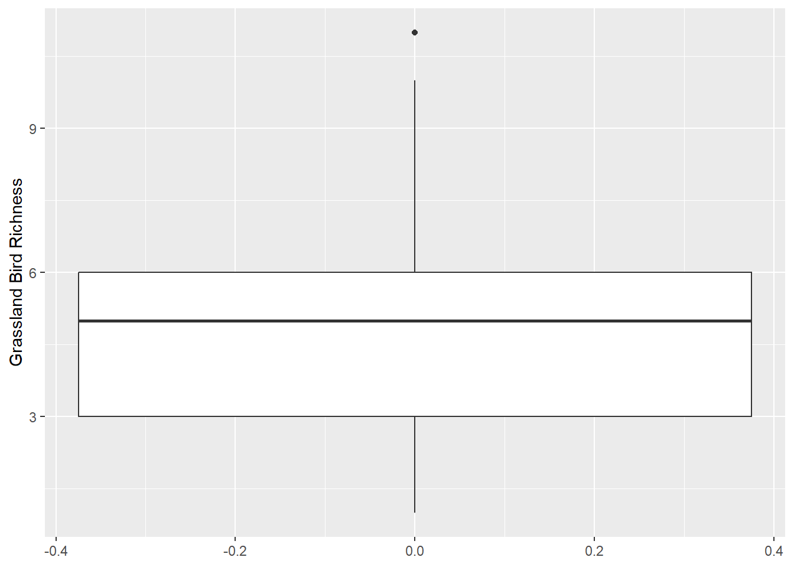
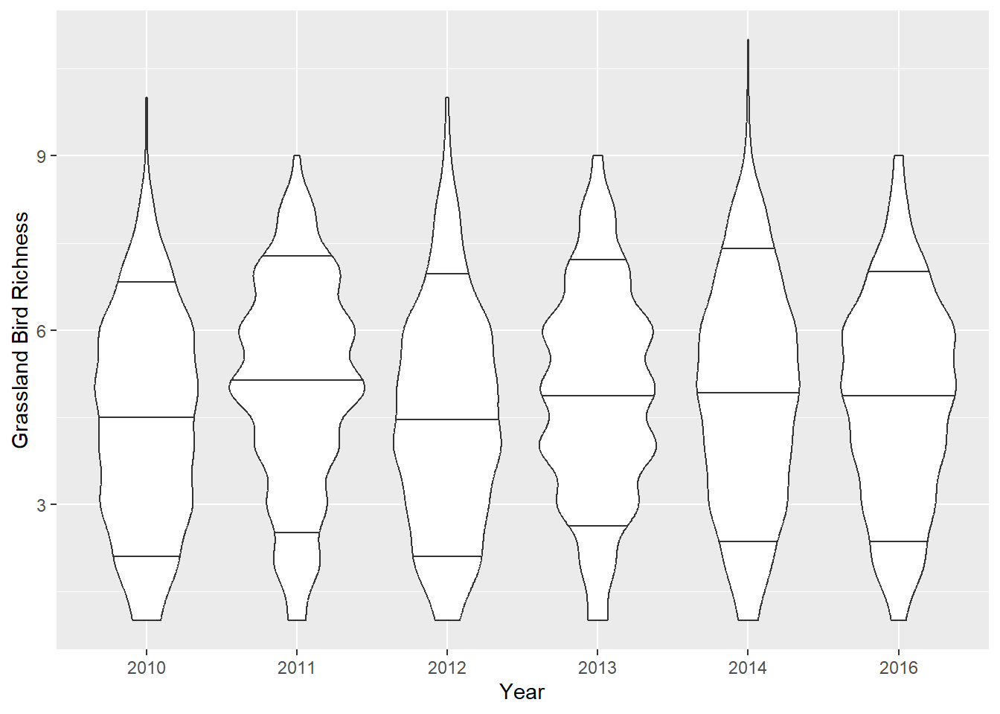
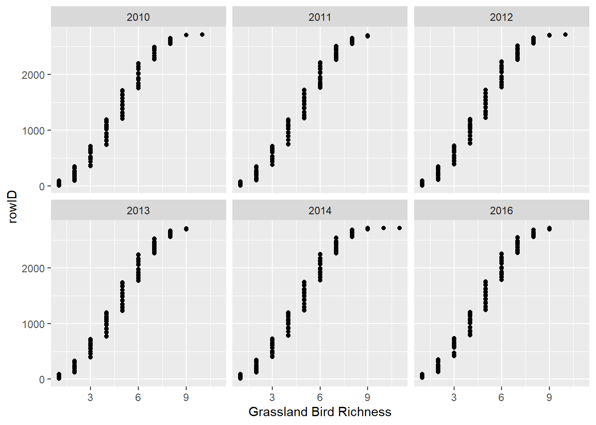
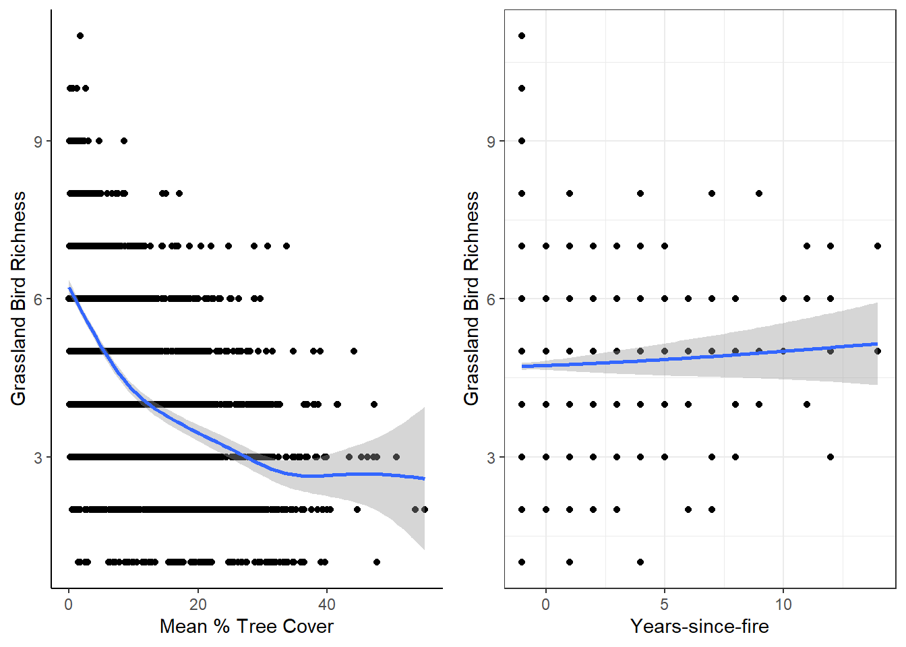
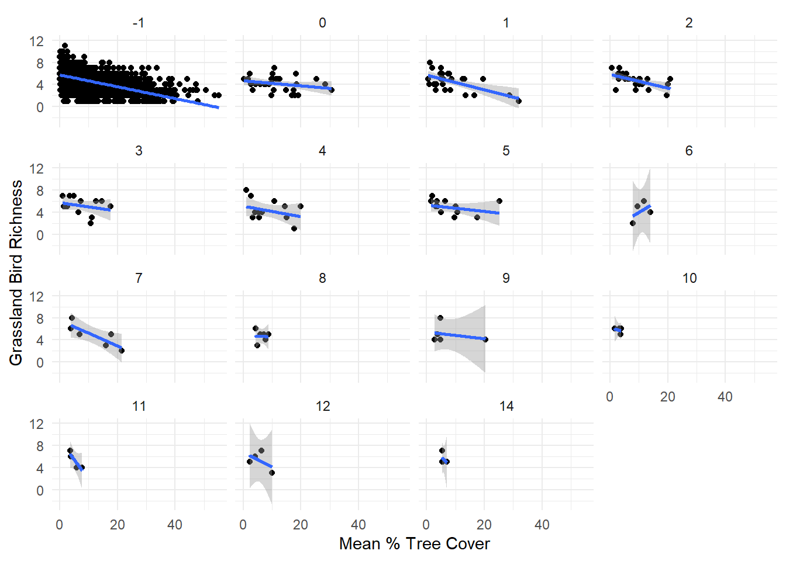

Data exploration
Assigned Reading:
Zuur, A. F., E. N. Ieno, and C. S. Elphick. 2010. A protocol for data exploration to avoid common statistical problems. Methods in Ecology and Evolution 1: 3-14. DOI: 10.1111/j.2041-210X.2009.00001.x
Key Points
Data exploration
- Outliers Y & X
- Outliers in response variable vs in covariates - to be dealt with differently
- Transformation less desirable for response variable than in covariates?
Homogeneity Y
Normality Y
- Example of importance of biological intuition and graphical
investigation
- Transformation to get normality may not be desirable–will learn more when we discuss generalized linear models.
- Zero trouble Y
- Zero-inflated GLM
- Double zeros, or joint absences - what do they mean? e.g., spatial clumping
- We will not be covering multivariate analyses in this course! (but they’re super cool, so go check them out)
- Collinearity X
- VIF of 10, 3, or 2 - reason for these values?
- VIFs, or common sense or biological knowledge
- Also… are pairwise comparisons worthwhile?
- Relationships Y & X
- Multi-panel scatter plots for checking for outliers
- Interactions
- Are data balanced?
- coplots (i.e., ggplot2::facet_wrap)
- Independence Y
- ACF, variograms, Moran’s I for checking for temporal and spatial non-independence
- We will focus on this in our Autocorrelation Topic.
Not all steps always needed
Common themes
- Biological intuition = key to make decisions about stats
- Hypothesis testing vs hypothesis generation
- One solution - two data sets - one to create hypotheses and one to test them
- But only practical for large data sets
- Emphasis on graphical tools
Analysis Example
The code below is built on data from Roberts et al. (2022) in Ecological Solutions and Evidence.
Checking for outliers
Zuur et al. recommends plotting your data using boxplots and dotcharts to detect outliers. Violin plots are also great options. Before removing suspected outliers, make sure they are actually outliers!
Boxplot
ggplot(data = dat_grass,
mapping = aes(y = Rich_Grass)) +
geom_boxplot() +
ylab("Grassland Bird Richness")
Violin plots
Violin plots show more data distribution details, but they can be messy. These are conditional (by year) and display the 10th, 50th (i.e., median), and 90th quantiles as horizontal lines.
ggplot(data = dat_grass,
mapping = aes(x = as.factor(Year), y = Rich_Grass, group = Year)) +
geom_violin(draw_quantiles = c(0.1, 0.5, 0.9)) +
ylab("Grassland Bird Richness") +
xlab("Year")
Dotchart for multiple variables
I personally don’t use these as much, but they can be useful.
dat_grass %>%
arrange(Rich_Grass) %>%
mutate(rowID = 1:n()) %>%
ggplot() +
facet_wrap(~ Year) +
geom_point(mapping = aes(x = Rich_Grass, y = rowID, group = Year)) +
xlab("Grassland Bird Richness")
What’s your data’s distribution?
Some statistical tests assume normal distributions, making it important to check the shape of your data. Does this histogram of grassland bird richness appear to have a “normal” distribution (i.e., Gaussian distribution)? Why or why not?
We will learn about probability distributions in our Probability Distributions Topic.
ggplot() +
geom_histogram(data = dat_grass,
mapping = aes(x = Rich_Grass),
binwidth = 1) +
ylab("Frequency") +
xlab("Grassland Bird Richness")
Collinearity?
It’s absolutely important to check for pairwise correlations, which we can do with the “cor()” function as below. I typically use the default “Pearson” method, but you should read the R Documentation for other options (kendall, spearman). However, pairwise correlations should be taken with a grain of salt. See this quote from the R Documentation for the “performance::check_collinearity()” function:
“Multicollinearity should not be confused with a raw strong correlation between predictors… Remember: ”Pairwise correlations are not the problem. It is the conditional associations - not correlations - that matter.” (McElreath 2020, p. 169)”
We will talk about Zuur’s preference of “variance inflation factors” to check for collinearity in the linear models review Topic.
## Year Burned mean stdDev TSF
## Year 1.00000000 0.08962018 0.07545786 0.142219843 0.091743735
## Burned 0.08962018 1.00000000 -0.03778454 0.014892473 0.834689600
## mean 0.07545786 -0.03778454 1.00000000 0.908534920 -0.040105035
## stdDev 0.14221984 0.01489247 0.90853492 1.000000000 0.004607301
## TSF 0.09174374 0.83468960 -0.04010504 0.004607301 1.000000000Is there actually a relationship between X and Y?!
For this, we want to plot the response/dependent variable (grassland bird richness) against potential predictor/independent variables. Here, I use quick-and-dirty generalized additive models per ggplot2::geom_smooth and then combine the plots with cowplot::plot_grid
# Making individual plots
rich_treeMean <-
dat_grass %>%
ggplot(aes(x = mean, y = Rich_Grass)) +
geom_point() +
geom_smooth(method = "gam", formula = y ~ s(x)) + # a simple generalized additive model!
ylab("Grassland Bird Richness") +
xlab("Mean % Tree Cover") +
theme_classic() # FYI: there are lots of fun pre-made themes in ggplot2
rich_TSF <-
dat_grass %>%
ggplot(aes(x = TSF, y = Rich_Grass)) +
geom_point() +
geom_smooth(method = "gam", formula = y ~ s(x)) +
ylab("Grassland Bird Richness") +
xlab("Years-since-fire") +
theme_bw() # Another theme
# Combine plots
cowplot::plot_grid(rich_treeMean, rich_TSF, ncol = 2)
Also, we can use the “pairs()” function to create a bunch of scatterplots:

Should we consider interactions between predictor variables?
# Making individual plots
dat_grass %>%
ggplot(aes(x = mean, y = Rich_Grass)) +
facet_wrap(~ TSF) + # Make facet plots by Years-since-fire
geom_point() +
stat_smooth(method = "lm") +
ylab("Grassland Bird Richness") +
xlab("Mean % Tree Cover") +
theme_minimal()## `geom_smooth()` using formula = 'y ~ x'